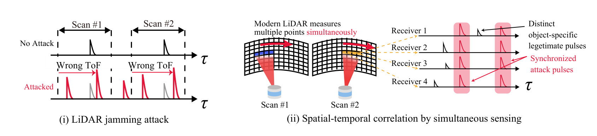
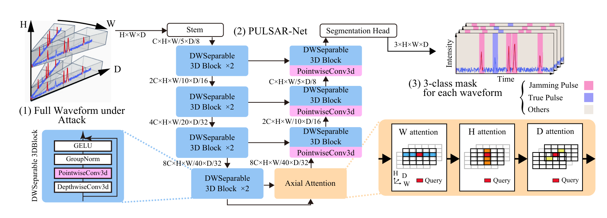
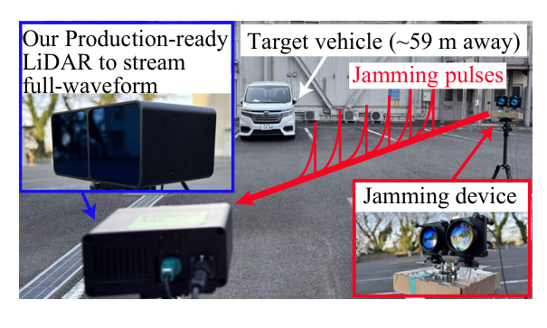
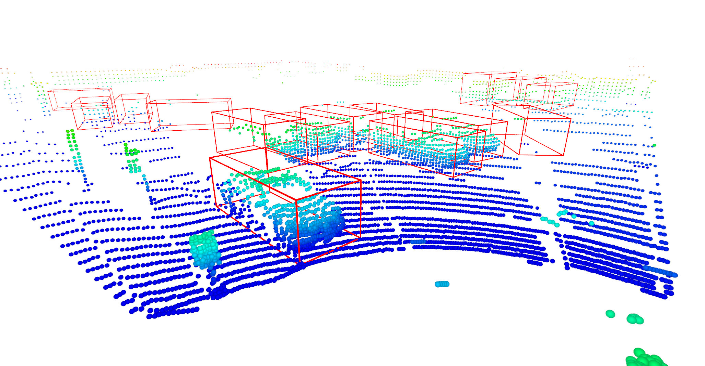
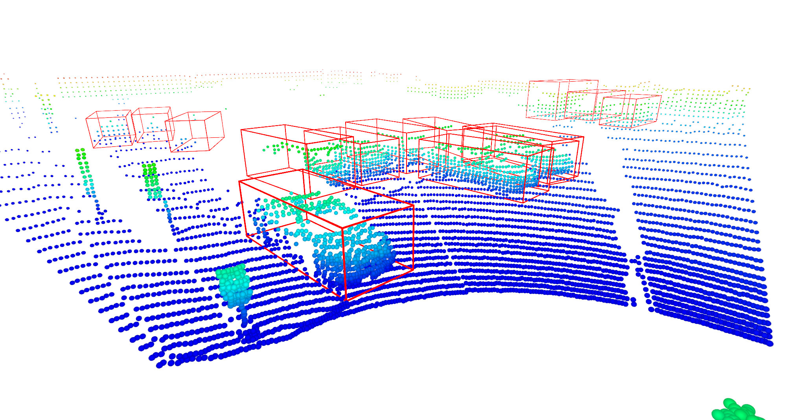

PULSAR-Net: Neural Reconstruction of LiDAR Point Clouds under Jamming Attacks via Full-Waveform Representation and Simultaneous Laser Sensing
NeurIPS 2026Abstract
LiDAR sensors are critical for autonomous driving perception, yet remain vulnerable to spoofing attacks. Jamming attacks inject high-frequency laser pulses that completely blind LiDAR sensors by overwhelming authentic returns with malicious signals. We discover that while point clouds become randomized, the underlying full-waveform data retains distinguishable signatures between attack and legitimate signals.
In this work, we propose PULSAR-Net, capable of reconstructing authentic point clouds under jamming attacks by leveraging previously underutilized intermediate full-waveform representations and simultaneous laser sensing in modern LiDAR systems. PULSAR-Net adopts a novel U-Net architecture with axial spatial attention mechanisms specifically designed to identify attack-induced signals from authentic object returns in the full-waveform representation. To address the lack of full-waveform representations in existing LiDAR datasets under jamming attacks, we introduce a physics-aware dataset generation pipeline that synthesizes realistic full-waveform representations under jamming attacks. Despite being trained exclusively on synthetic data, PULSAR-Net achieves reconstruction rates of 92% and 73% for vehicles obscured by jamming attacks in real-world static and driving scenarios, respectively.
Contributions
- PULSAR-Net (Point cloud Un-jamming via LiDAR Signal Adaptive Reconstruction), the first successful defense against jamming attacks on LiDAR systems: a U-Net-based architecture with axial spatial attention designed for attack-signal segmentation in the full-waveform representation.
- A physics-based synthesis pipeline that generates realistic full-waveform data under jamming attacks from existing point cloud datasets (KITTI-J and nuScenes-J).
- A recovery rate of ≥82% of points obscured by jamming on our synthetic benchmarks, an ≥2-fold improvement over a naive baseline.
- Integration into a production-ready LiDAR with full-waveform access, developed with a major supplier. Trained solely on simulated data, PULSAR-Net reconstructs 92% and 73% of erased vehicles in real-world static and driving scenarios.
Key Insight: The Legitimate Echo Is Still There
A jamming attack such as the HFR attack floods the LiDAR with rapid laser pulses. The DSP pipeline picks the strongest peak in each waveform, which is usually an attack pulse, so the point lands at the wrong time of flight and the point cloud becomes random. Yet the legitimate reflection still reaches the sensor, only masked by stronger attack pulses. Because the corruption happens before the point cloud is formed, point-cloud-level defenses (e.g. radius or statistical outlier removal) cannot recover it. The information that can is normally discarded after peak detection.

(i) Under a jamming attack, attack pulses dominate the waveform and the detected peak gives a wrong ToF. (ii) Modern LiDARs measure multiple points simultaneously. The attack pulses appear synchronized across all receivers, while legitimate pulses differ per receiver depending on the object they hit.
Full-waveform representation
The time-resolved intensity trace recorded before peak detection. It still contains the weaker legitimate return buried among the attack pulses.Simultaneous laser sensing
The attacker's beam diffuses wider than the LiDAR aperture, so it cannot target one receiver. Attack pulses look identical across simultaneously sensed receivers; legitimate returns do not.PULSAR-Net

Overview of PULSAR-Net. A U-Net-inspired architecture built from depthwise-separable 3D convolutions for efficient feature extraction, with axial attention at the bottleneck to model spatial and temporal dependencies in the full waveform. It outputs a 3-class mask (jamming pulse / true pulse / others) for each waveform.
Segmentation-Based Full-Waveform Denoising
We formulate reconstruction as segmentation rather than regression. For each waveform bin, PULSAR-Net predicts one of three classes: background, legitimate reflection, or attack pulse. The predicted attack mask suppresses the malicious pulses, Â = Ǎ ⊙ (1 − Mattack), and the point cloud is recovered by peak detection on each denoised waveform. Masking in the original high-resolution space keeps the fine waveform detail that a regression model loses when resizing its input, and it is cheaper.
Depthwise-Separable 3D Convolution
Full-waveform tensors (e.g. 32 × 1800 × 800) are too large for standard 3D convolutions. Decoupling spatial and channel-wise operations cuts parameters and computation by over 97% while keeping representational capacity, which makes real-time deployment possible.
Axial Spatial-Temporal Attention
Self-attention is applied sequentially along the azimuth (W), elevation (H), and temporal (D) axes. This captures long-range dependencies at a fraction of the cost of full 3D attention, and lets the network compare simultaneously sensed channels directly: identical waveforms across channels signal an attack, while legitimate returns naturally differ.
Physics-Aware Jamming Simulation
Collecting full-waveform data under real jamming at scale is impractical, and existing datasets store only final point clouds. We therefore synthesize training data from KITTI and nuScenes:
- Waveform modeling. Each point becomes a Gaussian pulse at its time of flight, scaled by its intensity, giving the benign waveform tensor L.
- Simultaneous sensing. A scan-timing matrix T marks which measurements are fired at the same time.
- Jamming attack. The attacked waveform is Ǎ = L + F(T) + N, where F injects a periodic train of Gaussian attack pulses shared by all simultaneously sensed measurements, with ±20 ns timing jitter. This covers more general jamming than periodic HFR / A-HFR attacks.
Results on KITTI-J and nuScenes-J
We inject jamming into ±45° in front of the victim on 1,100 scenes from each dataset (1,000 train / 100 test), with φ simultaneous sensing lasers. We compare against Naive Average Subtraction, which subtracts the mean of simultaneously sensed waveforms, and Neural DSP (Scheuble et al., ICCV 2025), a Transformer that processes full waveforms. Point-level recovery accuracy counts a reconstructed point as correct if it is within 0.5 m of the benign point along the laser direction.
| φ | Ours | Naive Avg. Sub. | Neural DSP | No Defense | ||||
|---|---|---|---|---|---|---|---|---|
| nuScenes-J | KITTI-J | nuScenes-J | KITTI-J | nuScenes-J | KITTI-J | nuScenes-J | KITTI-J | |
| 1 | 67.95 | 73.21 | – | – | 4.57 | 3.92 | 3.37 | 2.92 |
| 4 | 82.66 | 89.63 | 38.22 | 28.60 | 6.21 | 21.40 | 3.36 | 2.87 |
| 5 | 86.13 | 89.90 | 38.26 | 30.33 | 9.56 | 26.39 | 3.39 | 2.92 |
| 10 | 85.95 | 89.86 | 37.77 | 35.93 | 36.67 | 29.47 | 3.39 | 2.93 |
| 25 | 86.35 | 89.62 | 36.91 | 42.28 | 46.35 | 21.03 | 3.42 | 2.90 |
| 55 | 86.47 | 89.85 | 35.50 | 45.44 | 48.87 | 13.76 | 3.41 | 2.92 |
| 110 | 86.32 | 89.44 | 32.60 | 35.21 | 47.84 | 13.44 | 3.39 | 2.82 |
| 225 | 86.75 | 89.56 | 34.89 | 16.36 | 38.93 | 13.30 | 3.35 | 2.85 |
Downstream, PULSAR-Net brings detector mAP from 0 back to near the no-attack level (e.g. 65.52 vs. 69.87 with PointPillars on nuScenes-J), while all baselines collapse under heavy jamming. Naive subtraction leaves residual attack pulses that become false positives, and Neural DSP's coarse tokenization cannot resolve the many peaks in a jammed waveform.
| φ | Method | nuScenes-J | KITTI-J | ||
|---|---|---|---|---|---|
| PointPillars | CenterPoint | PointPillars | PV-RCNN | ||
| 25 | No Defense | 0.00 | 0.00 | 0.00 | 0.00 |
| Naive Avg. Sub. | 1.94 | 0.00 | 21.81 | 41.06 | |
| Neural DSP | 20.09 | 4.07 | 4.32 | 6.25 | |
| Ours | 64.03 | 59.08 | 48.33 | 56.06 | |
| 110 | No Defense | 0.00 | 0.00 | 0.00 | 0.00 |
| Naive Avg. Sub. | 2.56 | 4.04 | 16.36 | 32.94 | |
| Neural DSP | 37.70 | 26.51 | 0.57 | 1.43 | |
| Ours | 65.52 | 59.00 | 48.10 | 55.74 | |
| 225 | No Defense | 0.00 | 0.00 | 0.00 | 0.00 |
| Naive Avg. Sub. | 4.09 | 9.11 | 0.14 | 2.34 | |
| Neural DSP | 31.05 | 22.49 | 0.34 | 0.63 | |
| Ours | 64.15 | 59.25 | 48.95 | 56.67 | |
| – | No Attack | 69.87 | 72.72 | 57.51 | 62.75 |
Transferability and Ablation
A model trained on nuScenes-J keeps 81.73% point-level accuracy on KITTI-J, suggesting that PULSAR-Net learns LiDAR-agnostic physical cues rather than dataset artifacts. Attention along a single axis helps only marginally; attention on all three axes gives the best accuracy at a negligible speed cost.
| Train → Test | nuScenes-J | KITTI-J |
|---|---|---|
| nuScenes-J | 86.13 | 81.73 |
| KITTI-J | 58.81 | 89.90 |
| Attention | Point Acc. | mAP | FPS |
|---|---|---|---|
| None | 67.85 | 25.01 | 32.89 |
| W only | 82.98 | 62.05 | 31.94 |
| H only | 80.34 | 62.50 | 32.25 |
| D only | 81.93 | 62.55 | 32.36 |
| W + H + D | 86.13 | 63.26 | 31.74 |
Real-World Evaluation
We developed a production-ready LiDAR with a major LiDAR manufacturer that streams full-waveform data alongside its standard point cloud output (90.24° × 26.3° FoV, 0.47° angular resolution, φ = 96), and attacked it with the state-of-the-art HFR jamming attack. The PULSAR-Net used here is trained only on synthetic nuScenes-J, with no LiDAR-specific fine-tuning. We evaluate on 700 frames across static and driving scenarios, with 3,106 manually annotated vehicles at 3.4 m to 59 m.

Experimental setup. Our production-ready full-waveform LiDAR, a target vehicle about 59 m away, and the jamming device.
Demo video. PULSAR-Net against a real LiDAR jamming attack in driving and static scenarios, with CenterPoint detections overlaid. The target vehicle disappears from the jammed point cloud in every frame, and PULSAR-Net recovers it.


No Attack PULSAR-NetLeft: No Attack / Under Attack (alternating) | Right: PULSAR-Net Reconstruction
Hover or drag to move the slider yourself.
| Detector | Static (4 scenarios) | Driving (3 scenarios) | |||
|---|---|---|---|---|---|
| No Attack | No Defense | Ours | No Defense | Ours | |
| PointPillars | 49.7 | 0.10 | 49.8 | 0.70 | 50.7 |
| CenterPoint | 67.1 | 0.00 | 69.4 | 0.20 | 63.1 |
| PV-RCNN | 44.0 | 0.00 | 49.8 | 0.00 | 53.8 |
- Static scenarios. Jamming collapses detection to mAP ≈ 0. PULSAR-Net restores it to the no-attack level or slightly above, and reconstructs 91.7% of the vehicles erased by the attack (CenterPoint, IoU 0.4).
- Driving scenarios (up to 30.5 km/h). PULSAR-Net recovers 50.7 / 63.1 / 53.8 mAP from near zero and reconstructs 73.2% of erased vehicles, showing that the reconstruction keeps enough geometric cues even under motion.
Acknowledgements
We gratefully acknowledge Takahiro Kado, Ibuki Fujioka, and Taro Beppu at Sony Semiconductor Solutions for their generous support and for providing the Sony LiDAR sensor used in this work. The Sony LiDAR system played an essential role in enabling this research.
BibTeX
@inproceedings{yoshida2026pulsarnet,
author = {Yoshida, Ryo and Sato, Takami and Zhang, Wenlun and Hayakawa, Yuki and Nagai, Shota and Zhong, Yunshan and Yoshioka, Kentaro},
title = {Neural Reconstruction of {LiDAR} Point Clouds under Jamming Attacks via Full-Waveform Representation and Simultaneous Laser Sensing},
booktitle = {Advances in Neural Information Processing Systems (NeurIPS)},
year = {2026}
}